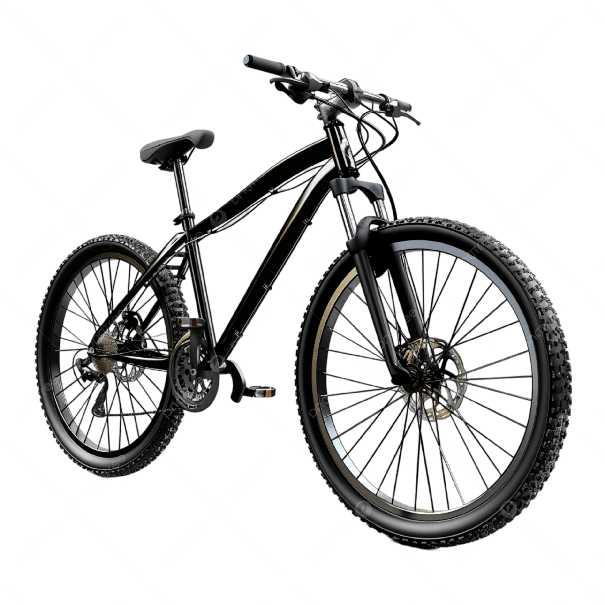
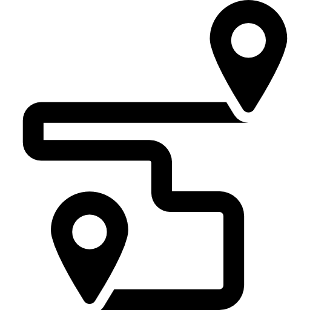

¿Quiénes somos?
En Rueda Libre, nos apasiona el ciclismo y la movilidad sostenible. Nuestro objetivo es ofrecer a los residentes y visitantes de Medellín una forma divertida y ecológica de explorar la ciudad. Con una amplia gama de bicicletas de alta calidad, nos aseguramos de que cada paseo sea seguro y agradable.
ContáctanosNuestros servicios
Ofrecemos una amplia variedad de bicicletas para satisfacer todas tus necesidades de transporte y recreación.
Consulta nuestras tarifasAlquiler de Bicicletas
Disfruta de la libertad de explorar Medellín por tu cuenta. Incluye casco y candado para tu seguridad.

Recorridos Guiados
Descubre los secretos de la ciudad con expertos locales. Salidas todos los fines de semana a las 7:00 a.m.

Proceso de alquiler
Alquilar una bicicleta con nosotros es fácil y rápido. Simplemente selecciona la bicicleta que deseas, elige la duración del alquiler y disfruta de tu paseo por Medellín.
Para alquilar una bicicleta, sigue estos pasos:
- Selecciona la bicicleta que deseas alquilar.
- Elige la duración del alquiler.
- Proporciona tu información de contacto y realiza el pago.
- Recoge tu bicicleta en nuestra tienda y disfruta de tu paseo.
Beneficios de alquilar con nosotros:
- Bicicletas de alta calidad y en buen estado.
- Personalizado atención al cliente.
- Ubicación conveniente en el centro de la ciudad.
Contáctanos
Si tienes alguna pregunta o deseas más información sobre nuestros servicios, no dudes en contactarnos. Estamos aquí para ayudarte a tener la mejor experiencia de ciclismo en Medellín.
Puedes encontrarnos aquí:
Ubicación en Google Maps